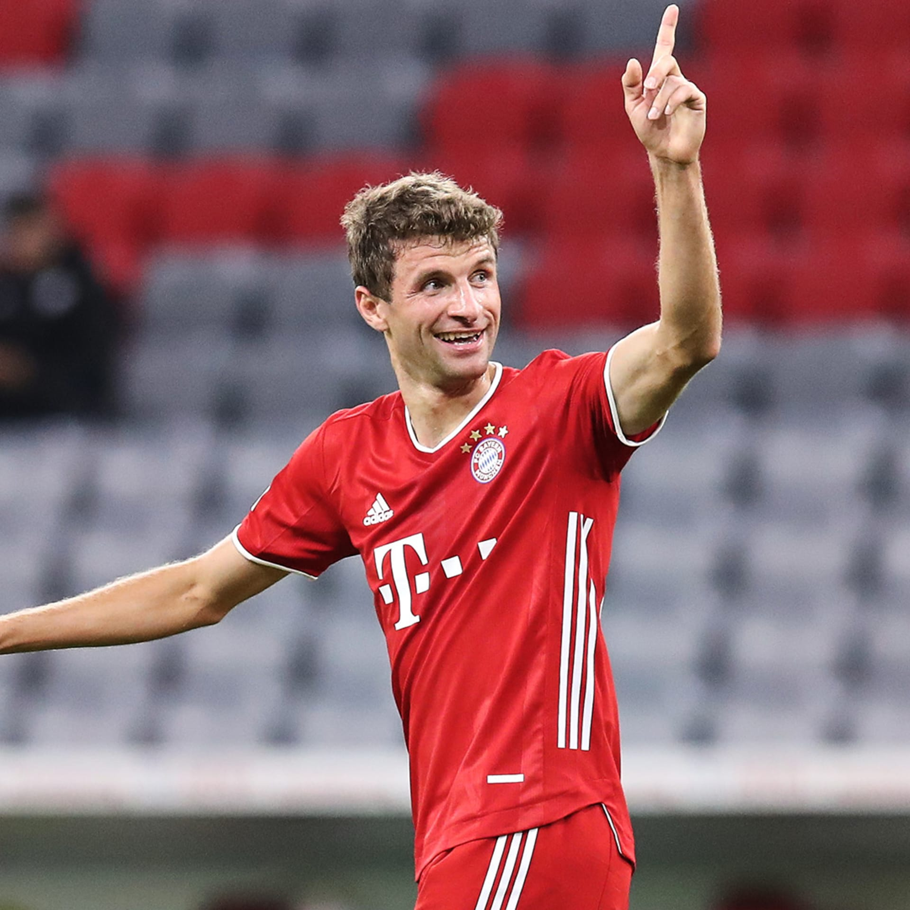

My Favorite Soccer Players
Ronaldihno
Ronaldo de Assis Moreira, commonly known as Ronaldinho Gaúcho or simply Ronaldinho, is a Brazilian retired professional footballer who played mostly as an attacking midfielder, but was also deployed as a winger.

Ronaldo
Cristaino Ronaldo,"The Portugese Devil", is the best player OAT.

Zidane
Zinedine Yazid Zidane, popularly known as Zizou, is a French professional football manager and former player who played as an attacking midfielder.

Del Piero
Alessandro Del Piero is an Italian former professional footballer who mainly played as a deep-lying forward, although he was capable of playing in several offensive positions.

Kaká
Ricardo Izecson dos Santos Leite, commonly known as Kaká or Ricardo Kaká, is a Brazilian former professional footballer who played as an attacking midfielder.

Buffon
Gianluigi Buffon, also known as Gigi Buffon, is an Italian former professional footballer who played as a goalkeeper.

Muller
Thomas Müller is a German professional footballer who plays for Bundesliga club Bayern Munich and the Germany national team.

Buffon
Paolo Cesare Maldini is an Italian former professional footballer who played primarily as a left back and centre back for AC Milan and the Italy national team.
R9
Ronaldo Luís Nazário de Lima, known as Ronaldo or Ronaldo Nazário, is a Brazilian business owner and president of Segunda Division club Real Valladolid, owner of Brasileiro Série A club Cruzeiro, and a former professional footballer who played as a striker.